공조냉동기계산업기사 (2019-04-27 기출문제)
1과목: 공기조화
1. 다음 중 직접 난방방식이 아닌 것은?
- 증기난방
- 온수난방
- 복사난방
- 온풍난방
(정답률: 63%)

2. 건축물의 출입문으로부터 극간풍의 영향을 방지하는 방법으로 틀린 것은?
- 회전문을 설치한다.
- 이중문을 충분한 간격으로 설치한다.
- 출입문에 블라인드를 설치한다.
- 에어커튼을 설치한다.
(정답률: 86%)
3. 유리를 투과한 일사에 의한 취득열량과 가장 거리가 먼 것은?
- 유리창 면적
- 일사량
- 환기횟수
- 차폐계수
(정답률: 74%)
4. 공조방식 중 송풍온도를 일정하게 유지하고 부하변동에 따라서 송풍량을 변화시킴으로써 실온을 제어하는 방식은?
- 멀티 존 유닛방식
- 이중덕트방식
- 가변풍량방식
- 패키지 유닛방식
(정답률: 79%)
5. 다음 중 냉방부하 계산 시 상당외기온도차를 이용하는 경우는?
- 유리창의 취득열량
- 내벽의 취득열량
- 침입외기 취득열량
- 외벽의 취득열량
(정답률: 70%)
6. 송풍기 회전수를 높일 때 일어나는 현상으로 틀린 것은?
- 정압 감소
- 동압 증가
- 소음 증가
- 송풍기 동력 증가
(정답률: 81%)
7. 냉방부하의 종류 중 현열만 존재하는 것은?
- 외기의 도입으로 인한 취득열
- 유리를 통과하는 전도열
- 문틈에서의 틈새바람
- 인체에서의 발생열
(정답률: 79%)
8. 주로 소형 공조기에 사용되며, 증기 또는 전기 가열기로 가열한 온수 수면에서 발생하는 증기로 가습하는 방식은?
- 초음파형
- 원심형
- 노즐형
- 가습팬형
(정답률: 81%)
9. 31℃의 외기와 25℃의 환기를 1 : 2의 비율로 혼합하고 바이패스 팩터가 0.16인 코일로 냉각 제습할 때 코일 출구온도(℃)는? (단, 코일의 표면온도는 14℃ 이다.)
- 14
- 16
- 27
- 29
(정답률: 60%)
10. 습공기 5000 m3/h를 바이패스 팩터 0.2인 냉각코일에 의해 냉각시킬 때 냉각코일의 냉각열량(kW)은? (단, 코일 입구공기의 엔탈피는 64.5 kJ/kg, 밀도는 1.2 kg/m3, 냉각코일 표면온도는 10℃이며, 10℃의 포화습공기 엔탈피는 30 kJ/kg 이다.)
- 38
- 46
- 138
- 165
(정답률: 41%)
11. 냉방부하에 관한 설명으로 옳은 것은?
- 조명에서 발생하는 열량은 잠열로서 외기부하에 해당된다.
- 상당외기온도차는 방위, 시작 및 벽체 재료 등에 따라 값이 정해진다.
- 유리창을 통해 들어오는 부하는 태양복사열만 계산한다.
- 극간풍에 의한 부하는 실내외 온도차에 의한 현열만을 계산한다.
(정답률: 73%)
12. 저속덕트와 고속덕트의 분류기준이 되는 풍속은?
- 10 m/s
- 15 m/s
- 20 m/s
- 30 m/s
(정답률: 87%)
13. 20℃ 습공기의 대기압이 100 kPa 이고, 수증기의 분압이 1.5 kPa 이라면 주어진 습공기의 절대습도(kg/kg′)는?
- 0.0095
- 0.0112
- 0.0129
- 0.0133
(정답률: 46%)
14. 다음 송풍기 풍량제어법 중 축동력이 가장 많이 소요되는 것은? (단, 모든 조건은 동일하다.)
- 회전수제어
- 흡입베인제어
- 흡입댐퍼제어
- 토출댐퍼제어
(정답률: 50%)
15. 에어와셔(공기세정기) 속의 플러딩 노즐(flooding nozzle)의 역할은?
- 균일한 공기흐름 유지
- 분무수의 분무
- 엘리미네이터 청소
- 물방울의 기류에 혼입 방지
(정답률: 77%)
16. 덕트 계통의 열손실(취득)과 직접적인 관계로 가장 거리가 먼 것은?
- 덕트 주위온도
- 덕트 가공정도
- 덕트 주위 소음
- 덕트 속 공기압력
(정답률: 88%)
17. 지역난방의 특징에 관한 설명으로 틀린 것은?
- 연료비는 절감되나 열효율이 낮고 인건비가 증가한다.
- 개별건물의 보일러실 및 굴뚝이 불필요하므로 건물이용의 효용이 높다.
- 설비의 합리화로 대기오염이 적다.
- 대규모 열원기기를 이용하므로 에너지를 효율적으로 이용할 수 있다.
(정답률: 79%)
18. 대향류의 냉수코일 설계 시 일반적인 조건으로 틀린 것은?
- 냉수 입출구 온도차는 일반적으로 5 ~ 10℃로 한다.
- 관내 물의 속도는 5 ~ 15 m/s로 한다.
- 냉수 온도는 5 ~ 15℃로 한다.
- 코일 통과 풍속은 2 ~ 3 m/s로 한다.
(정답률: 79%)
19. 공기조화 시스템에서 난방을 할 때 보일러에 있는 온수를 목적지인 사용처로 보냈다가 다시 사용하기 위해 되돌아오는 관을 무엇이라고 하는가?
- 온수공급관
- 온수환수관
- 냉수공급관
- 냉수환수간
(정답률: 89%)
20. 흡착식 감습장치의 흡착제로 적당하지 않은 것은?
- 실리카겔
- 염화리튬
- 활성 알루미나
- 합성 젱로라이트
(정답률: 69%)
2과목: 냉동공학
21. 흡입 관 내를 흐르는 냉매증기의 압력강하가 커지는 경우는?
- 관이 굵고 흡입관 길이가 짧은 경우
- 냉매증기의 비체적이 큰 경우
- 냉매의 유량이 적은 경우
- 냉매의 유속이 빠른 경우
(정답률: 65%)
22. 다음 중 냉동장치의 압축기와 관계가 없는 효율은?
- 소음효율
- 압축효율
- 기계효율
- 체적효율
(정답률: 85%)
23. 냉동사이클 중 P-h 선도(압력-엔탈피 선도)로 구할 수 없는 것은?
- 냉동능력
- 성적계수
- 냉매순환량
- 마찰계수
(정답률: 82%)
24. 이상기체의 압력이 0.5 MPa, 온도가 150℃, 비체적이 0.4 m3/kg 일 때, 가스상수(J/kg·K)는 얼마인가?
- 11.3
- 47.28
- 113
- 472.8
(정답률: 42%)
25. 가용전에 대한 설명으로 옳은 것은?
- 저압차단 스위치를 의미한다.
- 압축기 토출 측에 설치한다.
- 수냉응축기 냉각수 출구측에 설치한다.
- 응축기 또는 고압수액기의 액배관에 설치한다.
(정답률: 63%)
26. 냉매가 구비해야 할 조건으로 틀린 것은?
- 증발 잠열이 클 것
- 응고점이 낮을 것
- 전기 저항이 클 것
- 증기의 비열비가 클 것
(정답률: 59%)
27. 몰리에르 선도에서 건도(x)에 관한 설명으로 옳은 것은?
- 몰리에르 선도의 포화액선상 건도는 1 이다.
- 액체 70%, 증기 30%인 냉매의 건도는 0.7 이다.
- 건도는 습포화증기 구역 내에서만 존재한다.
- 건도는 과열증기 중 증기에 대한 포화액체의 양을 말한다.
(정답률: 70%)
28. 몰리에르 선도에 대한 설명으로 틀린 것은?
- 과열구역에서 등엔탈피선으로 등온선과 거의 직교한다.
- 습증기 구역에서 등온선과 등압선은 평행하다.
- 포화 액체와 포화 증기의 상태가 동일한 점을 임계점이라고 한다.
- 등비체적선은 과열 증기구역에서도 존재한다.
(정답률: 66%)
29. 팽창밸브 직후 냉매의 건도가 0.2이다. 이 냉매의 증발열이 1884 kJ/kg 이라 할 때, 냉동효과(kJ/kg)는 얼마인가?
- 376.8
- 1324.6
- 1507.2
- 1804.3
(정답률: 48%)
30. 평판을 통해서 표면으로 확산에 의해서 전달되는 열유속(heat flux)이 0.4 kW/m2 이다. 이 표면과 20℃ 공기흐름가의 대류전열계수가 0.01 kW/m2·℃ 인 경우 평판의 표면온도(℃)는?
- 45
- 50
- 55
- 60
(정답률: 37%)
31. 이상적인 냉동사이클과 비교한 실제 냉동사이클에 대한 설명으로 틀린 것은?
- 냉매가 관내를 흐를 때 마찰에 의한 압력손실이 발생한다.
- 외부와 다소의 열 출입이 있다.
- 냉매가 압축기의 밸브를 지날 때 약간의 교축작용이 이루어진다.
- 압축기 입구에서의 냉매상태 값은 증발기 출구와 동일하다.
(정답률: 67%)
32. 흡수식 냉동기의 특징에 대한 설명으로 틀린 것은?
- 용랑제어의 범위가 넓어 폭 넓은 용량제어가 가능하다.
- 터보 냉동기에 비하여 소음과 진동이 크다.
- 부분 부하에 대하 대응성이 좋다.
- 회전부가 적어 기계적인 마모가 적고 보수관리가 용이하다.
(정답률: 81%)
33. 액분리기에 대한 설명으로 옳은 것은?
- 장치를 순환하고 남는 여분의 냉매를 저장하기 위해 설치하는 용기를 말한다.
- 액분리기는 흡입관 중의 가스와 액의 혼합물로부터 액을 분리하는 역할을 한다.
- 액분리기는 암모니아 냉동장치에는 사용하지 않는다.
- 팽창밸브와 증발기 사이에 설치하여 냉각효율을 상승시킨다.
(정답률: 82%)
34. 암모니아의 증발잠열은 –15℃에서 1310.4 kJ/kg이지만, 실제로 냉동능력은 1126.2 kJ/kg 으로 작아진다. 차이가 생기는 이유로 가장 적절한 것은?
- 체적효율 때문이다.
- 전열면의 효율 때문이다.
- 실제 값과 이론 값의 차이 때문이다.
- 교축팽창시 발생하는 플래시 가스 때문이다.
(정답률: 71%)
35. 냉동장치의 운전 중 저압이 낮아질 때 일어나는 현상이 아닌 것은?
- 흡입가스 과열 및 압축비 증대
- 증발온도 저하 및 냉동능력 증대
- 흡입가스의 비체적 증가
- 성적계수 저하 및 냉매순환량 감소
(정답률: 72%)
36. 냉동장치 내에 불응축 가스가 혼입되었을 때 냉동장치의 운전에 미치는 영향으로 가장 거리가 먼 것은?
- 열교환 작용을 방해하므로 응축압력이 낮게 된다.
- 냉동능력이 감소한다.
- 소비전력이 증가한다.
- 실린더가 과열되고 윤활유가 열화 및 탄화된다.
(정답률: 69%)
37. 냉동장치에서 플래시 가스가 발생하지 않도록 하기 위한 방지대책으로 틀린 것은?
- 액관의 직경이 충분한 크기를 갖고 있도록 한다.
- 증발기의 위치를 응축기와 비교해서 너무 높게 설치하지 않는다.
- 여과기나 필터의 점검 청소를 실시한다.
- 액관 냉매액의 과냉도를 줄인다.
(정답률: 71%)
38. 다음 중 고압가스 안전관리법에 적용되지 않는 것은?
- 스크류 냉동기
- 고속다기통 냉동기
- 회전용적형 냉동기
- 열전모듈 냉각기
(정답률: 74%)
39. -20℃의 암모니아 포화액의 엔탈피가 314 kJ/kg 이며, 동일 온도에서 건조포화증기의 엔탈피가 1687 kJ/kg 이다. 이 냉매액이 팽창밸브를 통과하여 증발기에 유입될 때의 냉매의 엔탈피가 670 kJ/kg 이었다면 중량비로 약 몇 %가 액체 상태인가?
- 16
- 26
- 74
- 84
(정답률: 52%)
40. 증발식 응축기에 관한 설명으로 옳은 것은?
- 증발식 응축기의 냉각수는 보충할 필요가 없다.
- 증발식 응축기는 물의 현열을 이용하여 냉각하는 것이다.
- 내부에 냉매가 통하는 나관이 있고, 그 위에 노즐을 이용하여 물을 산포하는 형식이다.
- 압력강하가 작으므로 고압측 배관에 적당하다.
(정답률: 71%)
3과목: 배관일반
41. 물은 가열하면 팽창하여 급탕탱크 등 밀폐가열장치 내의 압력이 상승한다. 이 압력을 도피시킬 목적으로 설치하는 관은?
- 배기관
- 팽창관
- 오버플로관
- 압축 공기관
(정답률: 72%)
42. 도시가스를 공급하는 배관의 종류가 아닌 것은?
- 공급관
- 본관
- 내관
- 주관
(정답률: 73%)
43. 가스배관에서 가스가 누설될 경우 중독 및 폭발사고를 미연에 방지하기 위하여 조금만 누설되어도 냄새로 충분히 감지할 수 있도록 설치하는 장치는?
- 부스터설비
- 정압기
- 부취설비
- 가스홀더
(정답률: 85%)
44. 배관용 패킹 재료를 선택할 때 고려해야 할 사항으로 가장 거리가 먼 것은?
- 재료의 탄력성
- 진동의 유무
- 유체의 압력
- 재료의 부식성
(정답률: 60%)
45. 급수방식 중 고가탱크방식의 특징에 대한 설명으로 틀린 것은?
- 다른 방식에 비해 오염가능성이 적다.
- 저수량을 확보하여 일정 시간동안 급수가 가능하다.
- 사용자의 수도꼭지에서 항상 일정한 수압을 유지한다.
- 대규모 급수 설비에 적하하다.
(정답률: 65%)
46. 동관의 분류 중 가장 두꺼운 것은?
- K 형
- L 형
- M 형
- N 형
(정답률: 78%)
47. 루프형 신축이음쇠의 특징에 대한 설명으로 틀린 것은?
- 설치공간을 많이 차지한다.
- 신축에 따른 자체 응력이 생긴다.
- 고온, 고압의 옥외 배관에 많이 사용된다.
- 장시간 사용 시 패킹의 마모로 누수의 원인이 된다.
(정답률: 65%)
48. 고압배관과 저압배간의 사이에 설치하여 고압측 압력을 필요한 압력으로 낮추어 저압측 압력을 일정하게 유지시키는 밸브는?
- 체크밸브
- 게이트밸브
- 안전밸브
- 감압밸브
(정답률: 81%)
49. 건물 1층의 바닥면을 기준으로 배관의 높이를 표시할 때 사용하는 기호는?
- EL
- GL
- FL
- UL
(정답률: 77%)
50. 냉매액관 시공 시 유의사항으로 틀린 것은?
- 긴 입상 액관의 경우 압력의 감소가 크므로 충분한 과냉각이 필요하다.
- 배관 도중에 다른 열원으로부터 열을 받지 않도록 한다.
- 액관 배관은 가능한 한 길게 한다.
- 액 냉매가 관 내에서 증발하는 것을 방지하도록 한다.
(정답률: 80%)
51. 다음 중 증기난방설비 시공 시 보온을 필요로 하는 배관은 어느 것인가?
- 관말 증기 트랩장치의 냉각관
- 방열기 주위배관
- 증기공급관
- 환수관
(정답률: 61%)
52. 가스배관의 설치 방법에 관한 설명으로 틀린 것은?
- 최단거리로 할 것
- 구부러지거나 오르내림을 적게할 것
- 가능한 한 은폐하거나 매설할 것
- 가능한 한 옥외에 할 것
(정답률: 75%)
53. 다음 중 엘보를 용접이음으로 나타낸 기호는?
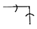
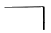
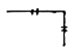
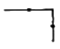
(정답률: 80%)
54. 2가지 종류의 물질을 혼합하면 단독으로 사용할 때보다 더 낮은 융해온도를 얻을 수 있는 혼합제를 무엇이라고 하는가?
- 부취제
- 기한제
- 브라인
- 에멀션
(정답률: 78%)
55. 배관의 호칭 중 스케쥴 번호는 무엇을 기준으로 하여 부여하는가?
- 관의 안지름
- 관의 바깥지름
- 관의 두께
- 관의 길이
(정답률: 71%)
56. 온수난방에서 역귀환방식을 채택하는 주된 이유는?
- 순환펌프를 설치하기 위해
- 배관의 길이르 축소하기 위해
- 열손실과 발생소옴을 줄이기 위해
- 건물 내 각 실의 온도를 균일하게 하기 위해
(정답률: 82%)
57. 냉·온수 헤더에 설치하는 부속품이 아닌 것은?
- 압력계
- 드레인관
- 트랩장치
- 급수관
(정답률: 72%)
58. 냉각탑에서 냉각수는 수직 하향 방향이고 공기는 수평 방향인 형식은?
- 평행류형
- 직교류형
- 혼합형
- 대향류형
(정답률: 81%)
59. 급수배관에서 수격작용 발생개소로 가장 거리가 먼 것은?
- 관내 유속이 빠른 곳
- 구배가 완만한 곳
- 급격히 개폐되는 밸브
- 굴곡개소가 있는 곳
(정답률: 83%)
60. 다음 중 급수설비에 설치되어 물이 오염되기 쉬운 형태의 배관은?
- 상향식 배관
- 하향식 배관
- 조닝 배관
- 크로스커넥션 배관
(정답률: 79%)
4과목: 전기제어공학
61. 제어된 제어대상의 양 즉, 제어계의 출력을 무엇이라고 하는가?
- 목표값
- 조작량
- 동작신호
- 제어량
(정답률: 59%)
62. 플로우차트를 작성할대 다음 기호의 의미는?
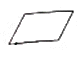
- 단자
- 처리
- 입출력
- 결합자
(정답률: 68%)
63. 피드백제어계 중 물체의 위치, 방위, 자세 등의 기계적 변위를 제어량으로 하는 것은?
- 서보기구
- 프로세스제어
- 자동조정
- 프래그램제어
(정답률: 75%)
64. 발전기의 유기기전력의 방향과 관계가 있는 법칙은?
- 플레밍의 왼손법칙
- 플레밍의 오른손법칙
- 패러데이의 법칙
- 암페어의 법칙
(정답률: 76%)
65. 시퀀스제어에 관한 설명 중 틀린 것은?
- 조합논리회로로 사용된다.
- 미리 정해진 순서에 의해 제어된다.
- 입력과 출력을 비교하는 장치가 필수적이다.
- 일정한 논리에 의해 제어된다.
(정답률: 78%)
66. 100 mH의 자기 인덕턴스를 가진 코일에 10A 의 전류가 통과할 때 축적되는 에너지는 몇 J 인가?
- 1
- 5
- 50
- 1000
(정답률: 42%)
67. 평형 3상 Y결선에서 상전압 Vp와 선간전압 Vl과의 관계는?
- Vl = Vp
- Vl = √3 Vp
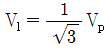
- Vl = 3Vp
(정답률: 65%)
68. 전원 전압을 일정 전압 이내로 유지하기 위해서 사용되는 소자는?
- 정전류 다이오드
- 브리지 다이오드
- 제너 다이오드
- 터널 다이오드
(정답률: 67%)
69. 목표값이 미리 정해진 변화를 할 때의 제어로서, 열처리 노의 온도제어, 무인 운전 열차 등이 속하는 제어는?
- 추종제어
- 프로그램제어
- 비율제어
- 정치제어
(정답률: 73%)
70. 그림과 같이 블록선도를 접속하였을 때, ⓐ에 해당하는 것은?
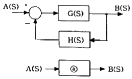
- G(s) + H(s)
- G(s) - H(s)
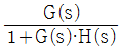
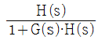
(정답률: 79%)
71. 3상 유도전동기의 회전방향을 바꾸기 위한 방법으로 옳은 것은?
- △-Y 결선으로 변경한다.
- 회전자를 수동으로 역회전시켜 기동한다.
- 3선을 차례대로 바꾸어 연결한다.
- 3상 전원 중 2선의 접속을 바꾼다.
(정답률: 83%)
72. 60Hz, 100V 의 교류전압이 200Ω의 전구에 인가될 때 소비되는 전력은 몇 W 인가?
- 50
- 100
- 150
- 200
(정답률: 42%)
73. 그림과 같은 계전기 접점회로의 논리식은?
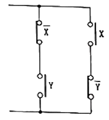
- XY
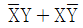
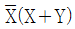
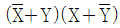
(정답률: 75%)
74. 특성방정식 s2 + 2s + 2 = 0을 갖는 2차계에서의 감쇠율
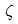
(damping ratio)은?- √2
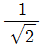
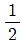
- 2
(정답률: 62%)
75.
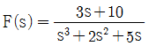
일 때 f(t)의 최종치는?- 0
- 1
- 2
- 8
(정답률: 58%)
76. 8Ω, 12Ω, 20Ω, 30Ω의 4개 저항을 병렬로 접속할 때 합성저항은 약 몇 Ω 인가?
- 2.0
- 2.35
- 3.43
- 3.8
(정답률: 72%)
77. 그림과 같은 병렬공진회로에서 전류 I가 전압 E보다 앞서는 관계로 옳은 것은?
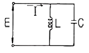
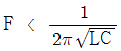
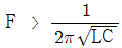
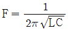
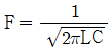
(정답률: 59%)
78. 유도전동기의 역률을 개선하기 위하여 일반적으로 많이 사용되는 방법은?
- 조상기 병렬접속
- 콘덴서 병렬접속
- 조상기 직렬접속
- 콘덴서 직렬접속
(정답률: 76%)
79. T1 ＞ T2 ＞ 0 일 때,
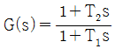
의 벡터궤적은?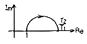
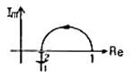
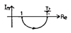
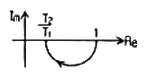
(정답률: 64%)
80. 다음 블록선도 중에서 비례미분제어기는?
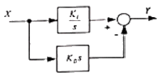
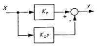
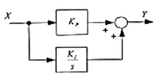
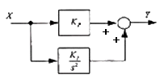
(정답률: 48%)